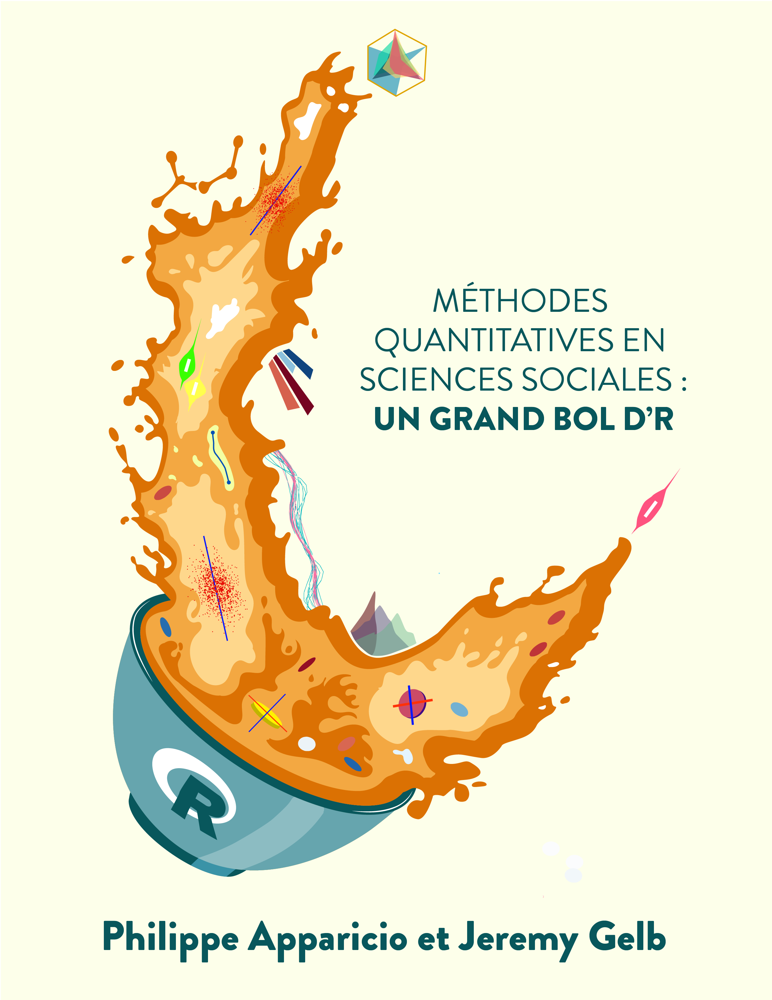

Le livre fait peau neuve !

Le livre Méthodes quantitatives en sciences sociales : un grand bol d’R a changé d'URL !
Dans sa précédente version, le livre était compilé avec le package bookdown et nous l'avons migré vers Quarto !
Mettez à jours vos raccourcis !
Nouvelle URL: https://serieboldr.github.io/MethodesQuantitatives/